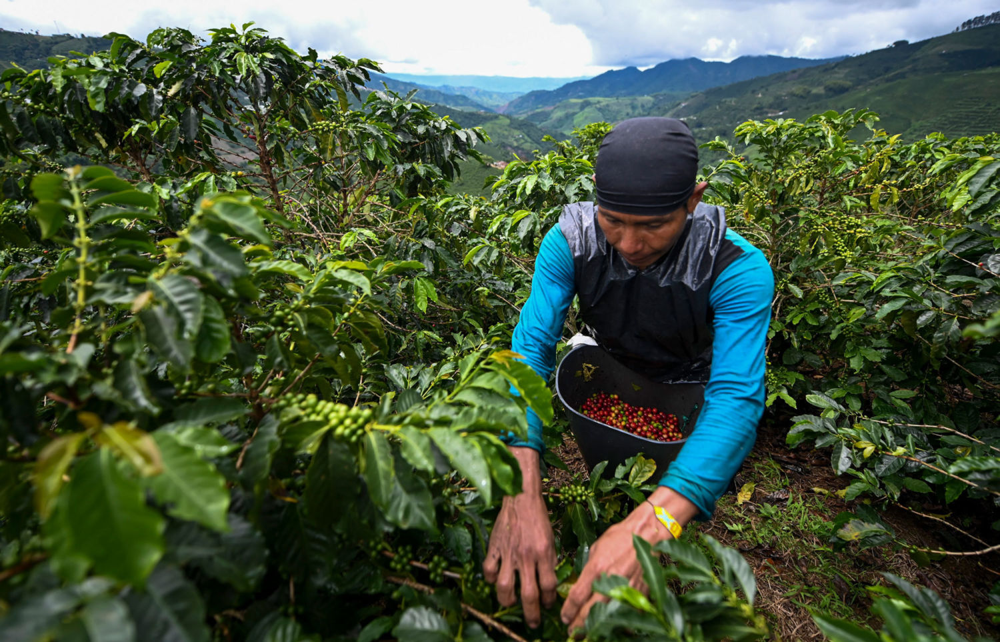

World of coffee

Coffee is a brewed drink prepared from roasted coffee beans, the seeds of berries from certain Coffea species. When coffee berries turn from green to bright red in color – indicating ripeness – they are picked, processed, and dried.[2] Dried coffee seeds (referred to as "beans") are roasted to varying degrees, depending on the desired flavor. Roasted beans are ground and then brewed with near-boiling water to produce the beverage known as coffee.
Coffee is darkly colored, bitter, slightly acidic and has a stimulating effect in humans, primarily due to its caffeine content.[3] It is one of the most popular drinks in the world,[4] and can be prepared and presented in a variety of ways (e.g., espresso, French press, caffè latte, or already-brewed canned coffee). It is usually served hot, although chilled or iced coffee is common. Sugar, sugar substitutes, milk or cream are often used to lessen the bitter taste.
History

According to one legend, ancestors of today's Oromo people in a region of Kaffa in Ethiopia were the first to recognize the energizing effect of the coffee plant.[1] However, no direct evidence that has been found earlier than the 15th century indicating who among the African populations used it as a stimulant, or where coffee was first cultivated.[1] The story of Kaldi, the 9th-century Ethiopian goatherd who discovered coffee when he noticed how excited his goats became after eating the beans from a coffee plant, did not appear in writing until 1671 and is probably apocryphal.[1]
Another legend attributes the discovery of coffee to a Sheikh Omar. According to an old chronicle (preserved in the Abd-Al-Kadir manuscript), Omar, who was known for his ability to cure the sick through prayer, was once exiled from Mocha in Yemen to a desert cave near Ousab (modern-day Wusab, about 90 kilometres (56 mi) east of Zabid).[12] Starving, Omar chewed berries from nearby shrubbery but found them to be too bitter. He tried roasting the seeds to improve the flavor, but they became hard. He then tried boiling them to soften the seed, which resulted in a fragrant brown liquid. Upon drinking the liquid Omar was revitalized and sustained for days. As stories of this "miracle drug" reached Mocha, Omar was asked to return and was made a saint.[13].